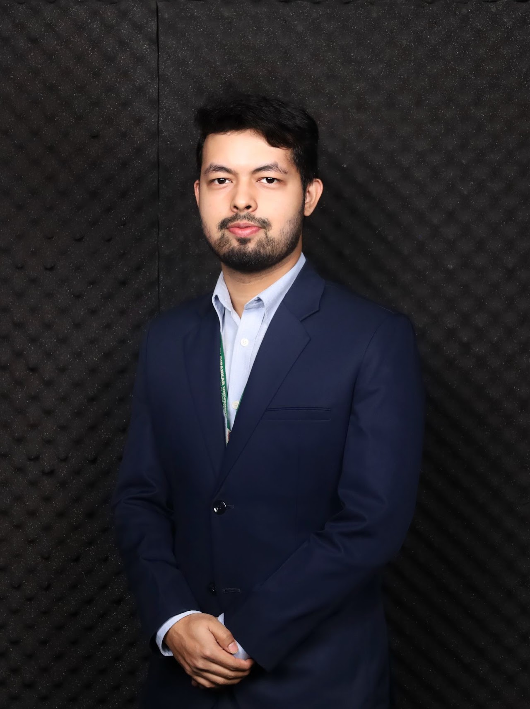

RAFID MAHMUD HAQUE
Lecturer & Coordinator
Department of Computer Science & Engineering
Atish Dipankar University of Science and Technology
Hi! I'm Rafid Mahmud Haque, currently working as a Lecturer and Coordinator at the Department of Computer Science and Engineering (CSE), Atish Dipankar University of Science and Technology (ADUST), Dhaka, Bangladesh. Previously, I worked as an Undergraduate and Graduate Teaching Assistant at East West University (EWU).
I earned my Bachelor's degree in Computer Science and Engineering from East West University, graduating with the academic distinction Magna Cum Laude. I am also pursuing my Master's degree in Computer Science and Engineering at Bangladesh University of Engineering and Technology (BUET).
My academic and research interests include Artificial Intelligence, Machine Learning, Deep Learning, Computer Vision, and Data Science. My research experience primarily involves developing machine learning and deep learning solutions for real-world problems, particularly in image processing and analysis. I have worked on projects involving agricultural disease detection, image-based classification, and anomaly detection. I am also interested in exploring emerging areas of AI, including agentic AI.
Alongside my research activities, I am actively involved in teaching, supervising undergraduate research, and supporting students in developing their technical and research skills. My long-term goal is to pursue an academic career focused on independent research and mentoring future researchers.